<<ルール>>
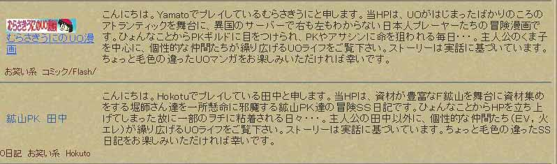
ごめんなさい。
どうしても、やりたくなっただけです。
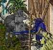
ベンダー見つけたのでお買い物。
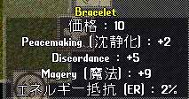
安。
ほんと使い道ないアクセとかこうなっちゃいますよね。
でも、スキル上げでアクセ上げしたい時になかなかこうゆうのが無かったりします。
スキル上げする予定も無いのですが、買いました。
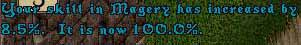
いえーい。
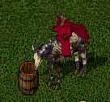
先日のゴミ箱。
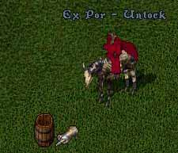
シャキーン！開いたー。
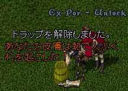
ぁっぃ。
中身は９２GPと青矢10本と白ポットでした。
９２GP － １０GP （アクセ代） ＝ ８２GP
いえーい。お得。
気分良く、鉱山巡りー。
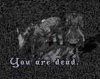
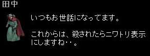
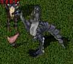
これで、いいんですよね・・・・。
ほんと、この人によく殺されます。
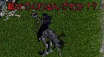
はい。
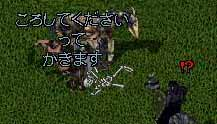
「誰かこの人殺してくださいって書きます。」
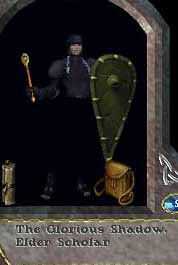
この人です。
誰か殺しておいてください。
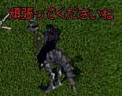
「頑張ってくださいね。」
あら、いい人だ。
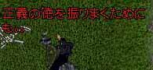
「正義の徳を振りまくためにも。」
誰か、この人殺しておいてください。
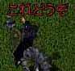
「これ、どうぞ」
え
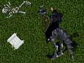
ぽい。
うおおおおお！！
これって、あれじゃないですか！
HP立ち上げると、一部のUOサイトを見ることしかなくなった
廃人な金持ちがくれるほどこしって奴ですよ！
やったー！
こうゆうのを待ってたんですよ！
こうゆうのがあるって聞いてたから、HP立ち上げたんですよ！！
EI１２０とかだったら、スキル構成考えないとなー♪
もう、キャンプスキル削っちゃうよ！？
おｋ－。
誰か、この人殺しておいてください。
んで、少しお話。
以外なことに、それほどUO暦も無く、まだまだ
やってないことがたくさんあるそうです。
いきなり、初心者のような語尾。
でも対人好きなようなので
これから派閥やってシギル染めアイテムだけやったり、
したらばで晒されたり日記戦争とか
やっていくんでしょうね。
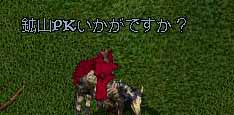
勧める。
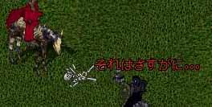
目の前にいる人の存在を否定。
まあ、これからは対人ギルドにでも入って、
強い人に、もまれてがんばってください。
そして、鉱山巡りは辞めて下さい。
んで、北極回ったんですよ。
テイマーさんがスキル上げしてるんですよ。
きっと、将来は得意気に弓DMしてWW召還して
人の乗りドラを瞬殺して
「私のドラのほうが強ーい☆」
とか、言うに決まってます。
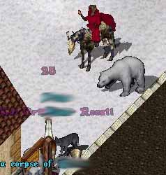
阻止。
そしたら、FC1 CR2 のアクセを落としたので
BP200個くらいと交換してもらおうと思って蘇生した。
そしたら、私の交渉は無視して話始めた。
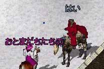
テイマーさん 「この辺、よく回ってるのですか？」
田中 「ヒマな時だけですね。」（いつもヒマなくせに見栄張った）
テイマーさん 「この辺はお友達の赤い人とかいます。」
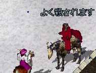
田中 「よく殺されます。」
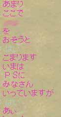
割愛すれば
「私のギルドタグが見えねーのか。友達とか強いんだぞ。お前みたいなカスが来るとこじゃねえ。」
ということらしいです。
（´∵｀）ゞ
なんかマイルールが確立されてるようです。
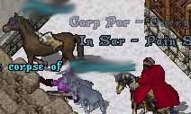
そこのギルド以外は殺していいんですって奥さん。
よくわからないので、いつもの鉱山巡り。
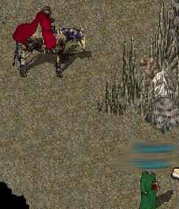
イター
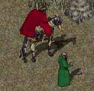
ここは私がルールブック！！
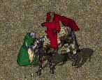
鉱山PKに驚き、逃げるがよい！！
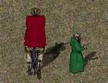
逃げれた者は勝者！逃げれぬ者は敗者なのダ！！
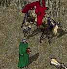
うははははは！
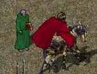
うはは・・・・。
画面見ましょうよ。
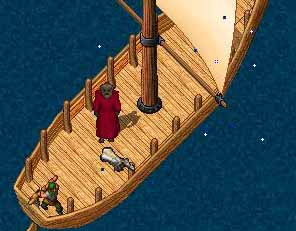
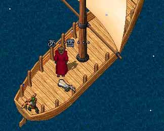
おしまい。